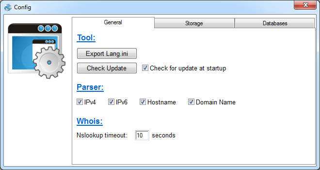
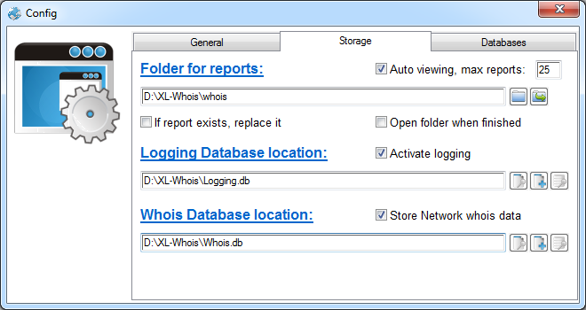
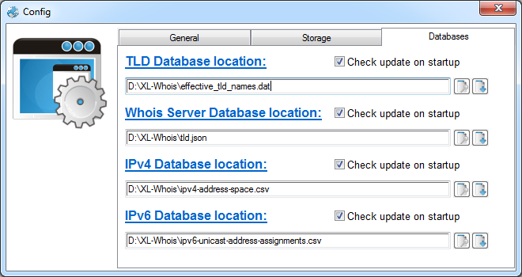
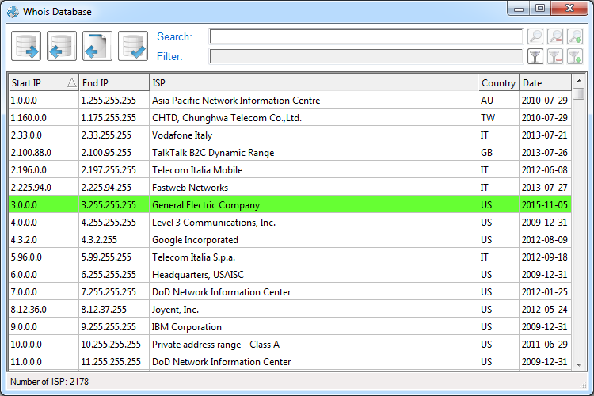
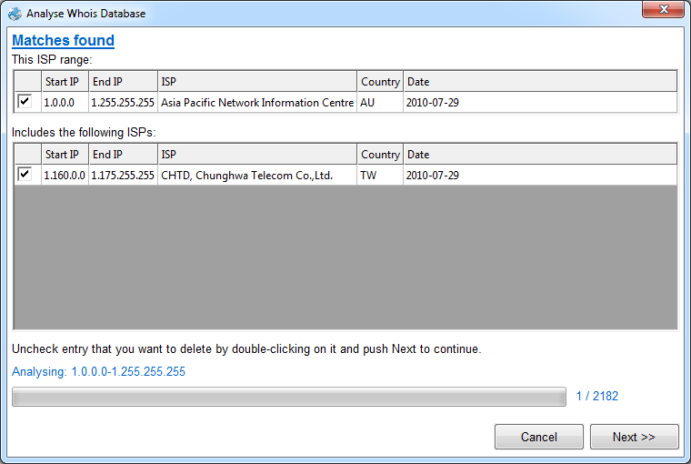
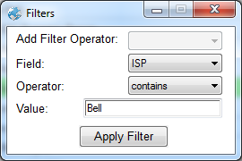
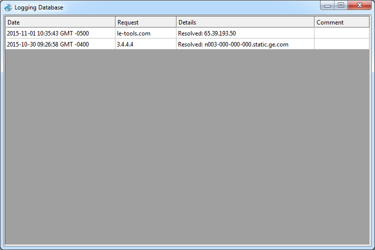
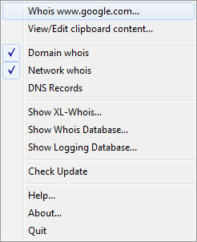
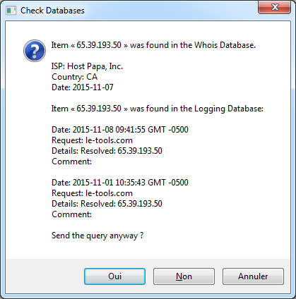
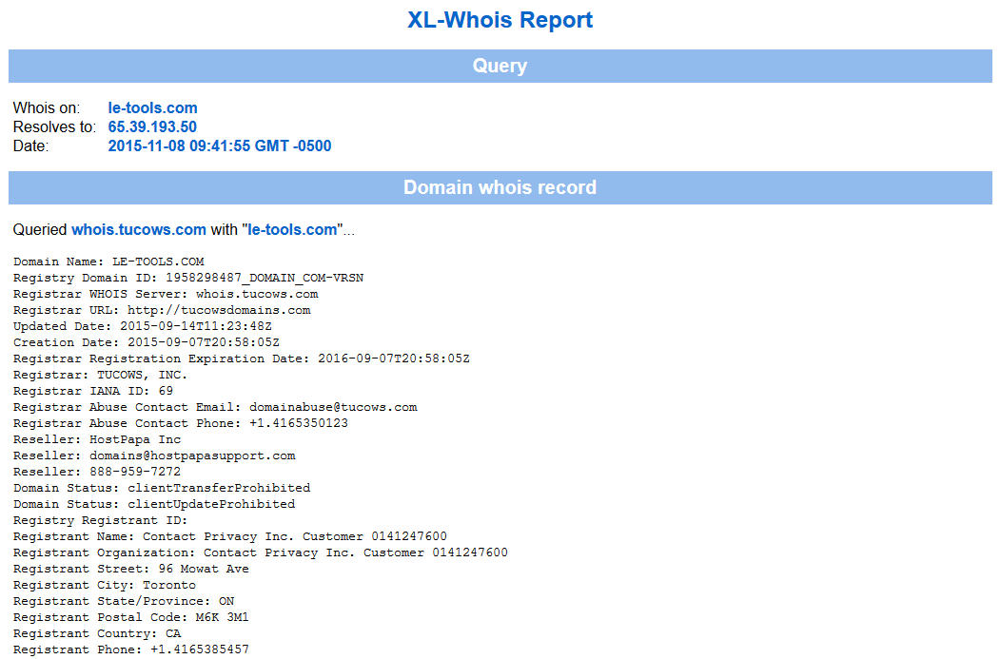

|
XL-Whois
Copyright (c) 2015 Alain Rioux
|
| See Credits about the logo |
When you start XL-Whois for the first time, you are asked if you want
to set default configuration. If you click Yes, you will be asked to select
a directory where:
- An empty Logging Database will be created;
- An empty Whois Database will be created;
- A subdirectory named whois will be created and selected
for XL-Whois reports.
- The TLD Database (effective_tld_names.dat) will be downloaded;
- The Whois Server Database (tld.json) will be downloaded;
- The IPv4 Database (ipv4-address-space.csv) will be downloaded;
- The IPv6 Database (ipv6-unicast-address-assignments.csv) will
be downloaded;
- Following default options are selected:
- Activate Logging;
- Check Logging Database;
- Store Network whois data;
- Check Whois database to "If present, ask";
- Auto viewing for reports with a maximum of 25;
- Auto update for TLD, Whois Server, IPv4 and IPv6 databases;
- All parser options are selected: IPv4, IPv6, Hostname and Domain Name;
- Check for update of the tool at startup.
A XL-Whois.ini file will be created in the program directory.
This configuration file keep your preferences in memory. You can also set elements
above manually, in case you already have some of these databases.
At the end, you will be asked if you want to send a whois test.
Main Window

In this window, you can select options for the current whois request(s):
- Options: XL-Whois supports three different types of
request:
- Domain whois for domain names registration details;
- Network whois for IP addresses;
- DNS Records which is about the Domain name;
- To be able to send a Domain whois about an IP address or
to be able to send a Network whois about a Domain name, XL-Whois
use system nsLookup to resolve the requested item.
- Check db: There are two databases that can be used here:
- Whois Database: Details about Network whois
in the database (see details in the Whois Database
section);
- Logging Database: History of your precedent requests. This
database contains the exact items you requested, the comment you add, etc. This
database is your personal history. See Logging
Database section for more details.
- Add comment: This comment will be added to the
XL-Whois Report and the Logging
Database. It can be anything like a file number, a project name, the reason
you did this request, etc. The comment is optional.

- Clipboard: The input data for whois requests is gathered
from the clipboard content. Obviously, it must be in text format, but it doesn't
have to be a clean enumeration. XL-Whois provides an integrated parser. You can
see the result by using the Parse button, but it's not necessary
to do this before sending your request. The parser is automatically used before
each request. The Edit button saves data from the textfield to
the clipboard. Parsed object are: IPv4, IPv6,
Hostname and Domain name. These objects can be
selected or deselected in the Config Window.
Config Window

General tab
In Tool section, we have the following functions:
- Export Lang.ini: Use this function to translate XL-Whois GUI.
See Translation for help about this
functionality.
- Check Update: Check on www.le-tools.com if a tool update is available;
- Check for update at startup: Check update everytime
XL-Whois is started;
In Parser section, you can select or deselect objects to
be extracted by XL-Whois. Objects are: IPv4, IPv6,
Hostname and Domain name.
In Whois section, you can set NsLookup timeout.
When XL-Whois tries to resolve a hostname to an IP address or an IP address to a
hostname, this is the time it will wait for the answer. Default is 10 seconds.
Storage tab

The following options have to be set in this tab:
- Folder for reports: This is the folder where the whois reports
will be saved.
- Auto viewing: This option is used to open whois reports in
browser (or the default program for .html file) as it go along. If number of reports
is higher than the limit, reports will not be automatically open even if the option
is selected.
- If report exists, replace it: If selected, older report with the
same name will be replaced. If unchecked, an incremental value will be added to the
new report filename.
- Open folder when finished: If selected, report folder will be
opened in explorer at the end of the process.
- Logging Database: This database is required only if you want
to activate logging. See Logging Database section
for more details.
- Whois Database: The Whois Database is the main database
where Network whois data will be saved. See Whois
Database section for more details.
- Store Network whois data: If this option is checked, XL-Whois
will use a cache to store the whole Network whois response. The
information will be available in the Whois
Database window.
Databases tab

In this tab, you have to set the location of four databases:
Whois Database

XL-Whois use SQlite Format for the Whois Database. Everytime you use XL-Whois and send
a Network whois request (IPv4 only), the response is parsed and some
information is stored in the database. This includes: IP address
range, ISP, Country and Date
of the request. Below are explanations about the functions in this Window:
- Grid functions:
- Click: Clicking on header of each column is used to sort (ascending
or descending) in alphanumeric order;
- Double-click: If it's a green background line, it means that all
Network whois data are stored in cache. Double-clicking this line will
show this data in a popup window (see below). If it's a not a green background line,
double-clicking will allow you to edit the cell (If you want to edit green background
line, you have to double-click slowly). ISP and Country are the only columns you will
be able to edit.

- Right click: Right click will show a popup window where you can
select the following functions:
- Select All: Select all the line in the grid (CTRL+A can also be
used);
- Copy lines: Copy selected lines to clipboard;
- Delete lines: Delete selected lines;
- Export Database: Export the
SQLite Database data to a text file. This file can be imported in another instance of
XL-Whois.
- Import to Database: The input
file must have been created by the Export Database function. Unknown ISPs
will be added and known ISPs will be modified if newer.
- Extract whois info from a file:
Network whois (raw format) is the same whatever the whois tool that has
been used. This function uses the same parser as XL-Whois calls when it receives a response
from a whois request. Network whois data will be added to the Database
if unknown, or modified if newer.
- Analyse Database: Network
whois from ARIN often contains more than one result: the specific range related
to the IP address requested and one, or more, parent ranges. XL-Whois store all these IP
address ranges in the database. This function helps you clean your database. You can keep
more specific ranges or only keep the larger range for best performance. See window
below:

- Search: With this functionnality,
you can search an IP address or a keyword. For IP address, it's based on IP range. For
keyword, it looks at the ISP column.
- Filter: To filter shown elements
in the grid. Combination of multiple filters is supported. See window below:

Logging Database

Logging Database can be opened in the Storage Tab of the Config Window or from the Taskbar menu. Data from this
database can also be imported or exported (right-click on any element in the grid). The
Comment column is editable.
Once everything is ok, you can send your whois request(s). To do this, all you have
to do is select and copy (to send the data to clipboard) and click on
whois. You can click the whois button on the main interface or use the
taskbar Whois function:

You can select anything, from an IP address to a whole page, and the XL-Whois parser
will find and enumerate object(s) that can be used for whois.
Here are some explanations about the Check db options:
- Check Whois Database:
- If present, ask: XL-Whois will check the Whois
Database before sending the request (for IPv4 address element only). If an ISP is already
known for this IP address, XL-Whois will show you actual data and ask you if you want to send
the request.
- If present, ignore: XL-Whois will check the Whois
Database before sending the request (for IPv4 address element only). If an ISP is already
known for this IP address, XL-Whois will ignore the request.
- Check after: XL-Whois will send the request and extract Network
whois data from the response. If an ISP is already known for this IP address, it will
ask you if you want to update the database with the new data. This option will work even if the
requested item is not an IP address.
- Check Logging Database: The item will be searched in Details
and Comment column. If more than three entries are found, only the three most
recent results will be shown.
This should look like this:

When you send the request, XL-Whois will use nslookup (if necessary) to resolve the IP address or the
hostname depending on requested item. Depending on the checked options, requests will be made as following:
- For Domain whois, XL-Whois will check in the TLD Database
to extract and valid the domain name. After that, it will check in the Whois
Server Database to identify the appropriate whois server for the query. You must be aware that, like
many other whois tools, XL-Whois use the WHOIS protocol to send the request to an appropriate server
listening on port 43. Some ccTLDs doesn't have this kind of server. In this case, you will have to check
on the Website of these ccTLDs. For some of them, it's possible to send a http query. Examples of ccTLD
that doesn't support whois request are .ar (Argentina), .pk (Pakistan)
and .es (Spain).
- For Network whois, XL-Whois will check in the IPv4 Database
or the IPv6 Database to find the correct registry for the IP address. If no
match is found, ARIN is used by default. The first request is sent to this registry. If the answer indicates
another registry, a second request is sent to the this registry. When XL-Whois gets the final response, it
parses the response to extract information about the ISP.
- For DNS Records, XL-Whois will query each NS server for A,
AAAA, NS, MX, CNAME, TXT,
SOA and PTR records.
Finally, XL-Whois will produce the report that will look like this (not a full sample below):

XL-Whois
Copyright
(c) 2015 Alain Rioux